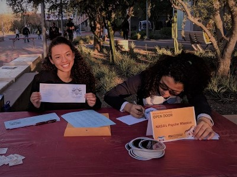

NASA-ASU Psyche Inspired Internship
Mediums: creative writing, poetry, graphics
- Sept 2017 - Apr 2018 | Titanium Class
- You can view the copies of the works on the official Portfolio Site.
- In collaboration with Chris Vasquez, we created a papier mache replica of the Psyche asteroid, using wire, foam, and paper. Oct 2017
- Designed a coloring sheet of the ASU Psyche Badge (logo) to engage younger students in the mission. Oct 2017
- Wrote a song about the Psyche Mission purpose: "Beep, Boop, Beep, Boop, Asteroid" (to the tune of "Twinkle, Twinkle, Little Star.") Nov 2017
- Documented my experiences as a Psyche Inspired Intern and as a project manager for Psyche Mission mobile app development. Jan 2018
- Created on-brand, Psyche themed Valentine's Day e-cards. Feb 2018
- Wrote space-themed poetry at the Psyche booth of ASU Open Door. Feb 2018
- Collected stories from Psyche Mission scientists, engineers, journalists and students. Snippets depicted in a word cloud. Mar 2018
- Wrote a limerick series that alternate in perspective of the asteroid and spacecraft. Apr 2018

Psyche Couplet
Staring up high, guided by an azimuth,
I spy a star hidden in a labyrinth.